01 / 电脑端表格主页
打开原图 ↗已确认整体方向接近预期：保留页面树、标题区、多视图栏和属性表格，细节继续迭代。
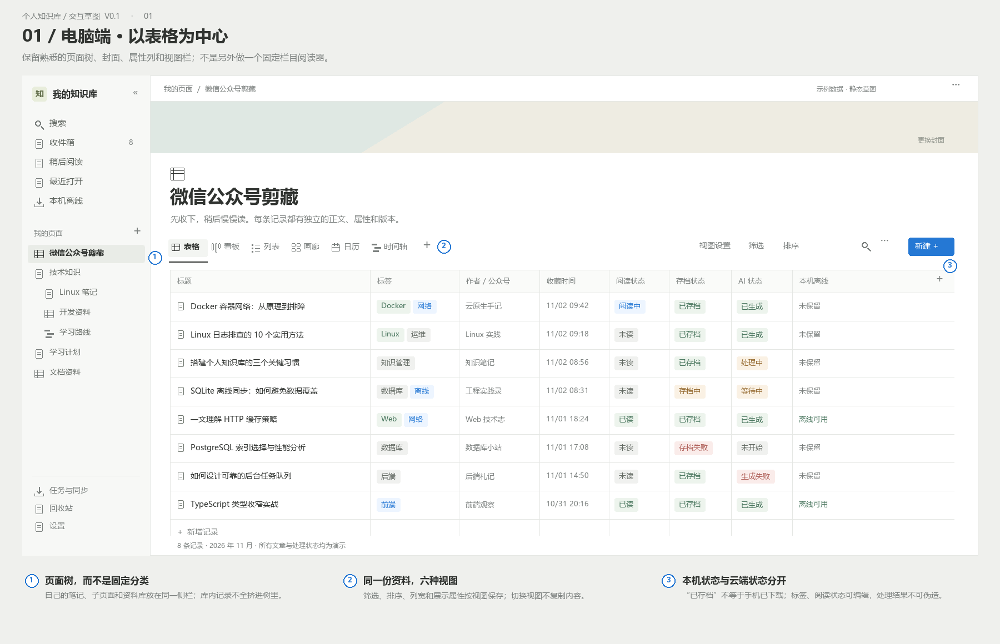
这一页的操作约定
- 点标题：在右侧打开记录。点属性：编辑对应的值。
- 点视图旁的加号：新增一个视图。点表头末尾的加号：新增属性列。
- 切换视图不复制记录；每个视图独立保留筛选、排序、列宽与展示属性。
- 存档状态和 AI 状态只读；阅读状态、标签和基础自定义属性可编辑。
02 / 表格旁边直接阅读
打开原图 ↗已确认：文章默认右侧打开，可随时展开为整页。保留表格位置；文章快照、AI 解读和自己的笔记分开。
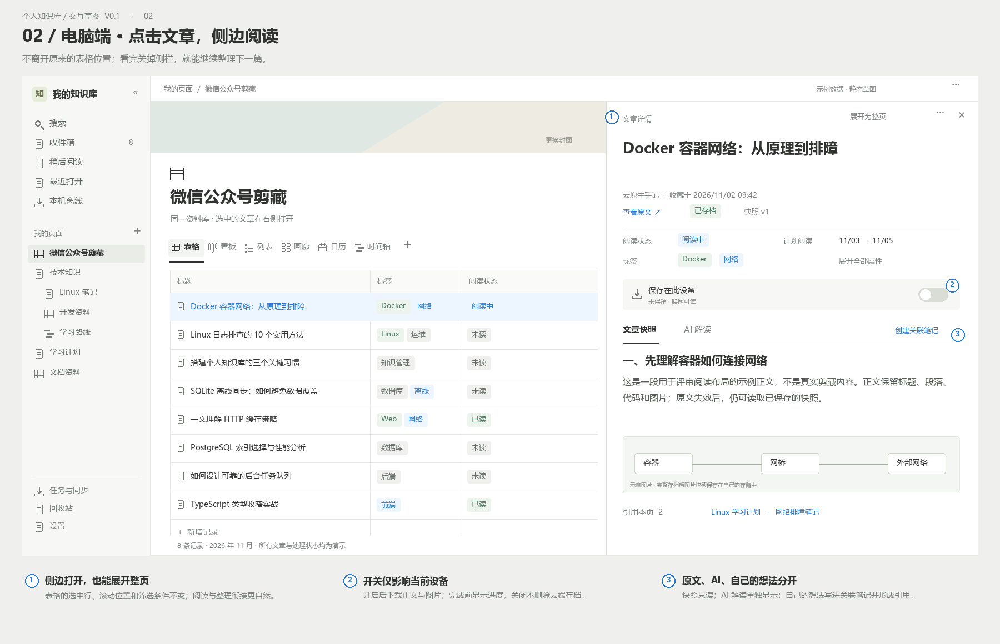
这一页的操作约定
- 关闭侧栏后，返回原表格选中位置，不重新跳到列表顶部。
- 开启离线保存后，需要经过等待下载、下载中、完成或失败；此草图展示未开启的状态。
- 关闭离线保存不会删掉云端记录；本机未同步修改不得清理。
- 原始快照只读，创建关联笔记保存自己的想法。
03 / 同一批文章，看板与时间轴
打开原图 ↗这是一张对照板，不是把两种视图硬放在一个应用页面里。
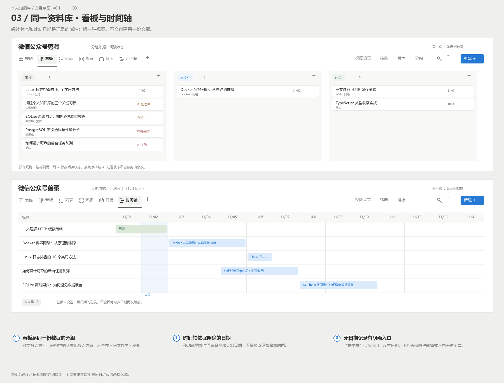
这一页的操作约定
- 拖动看板卡片改变阅读状态，不能改变存档是否成功的真实结果。
- 移动时间条改变计划日期，不修改原始收藏时间。
- 没有日期的三条资料保留“未安排”入口，不会丢失。
04 / 普通笔记中的嵌入表格与双链
打开原图 ↗上面写计划，下面直接使用已有文章库，再通过页面引用把笔记连接起来。
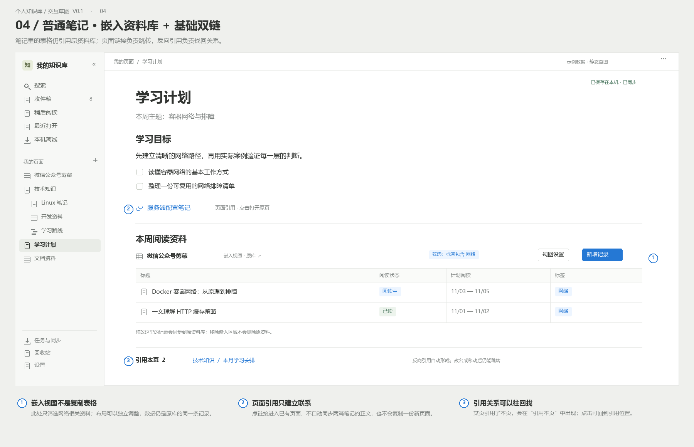
这一页的操作约定
- 嵌入视图使用自己的筛选条件，这里只显示“网络”标签的两篇资料。
- 修改单元格会改变原记录；移除整个嵌入区域不删除原库。
- 删除嵌入表格中的记录仍属于删除原记录，必须明确告知并可恢复。
- 页面改名或移动后引用仍有效。页面底部的反向引用自动形成。
- 离线保存笔记不表示已下载嵌入视图中所有文章。
05 / 列表、画廊与日历
打开原图 ↗补齐六种基础视图；不把表格之外的视图当作占位菜单。
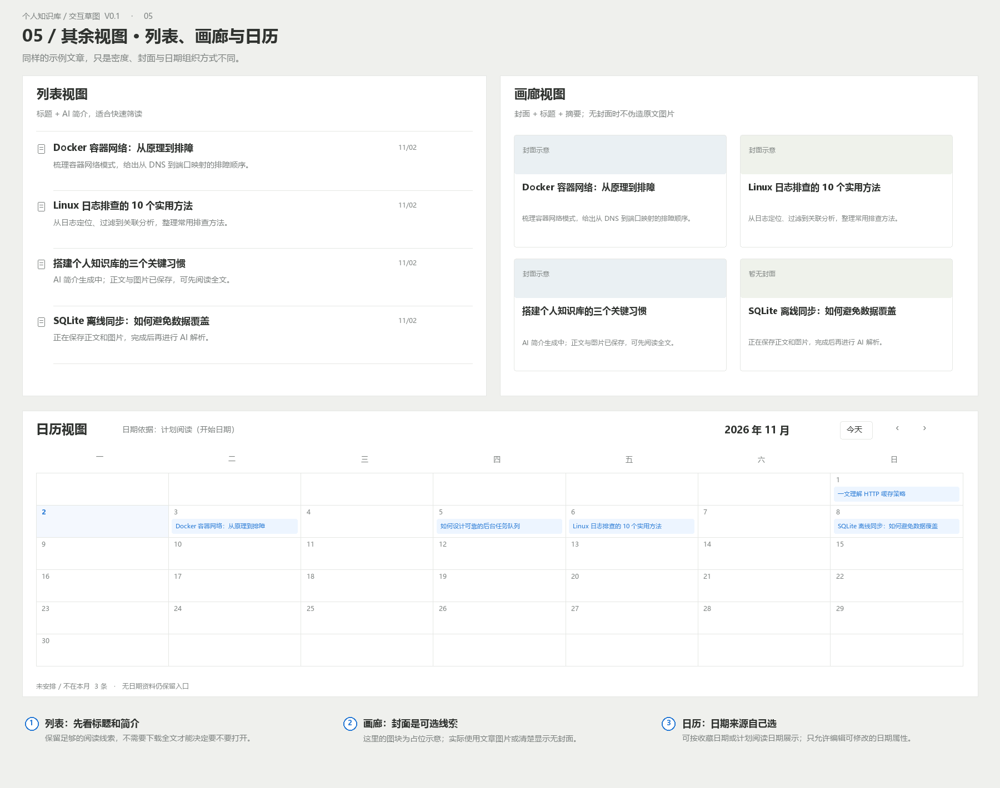
06 / 安卓手机的三步浏览流程
打开原图 ↗资料库表格 → 文章与 AI 简介 → 选择离线保存。六种视图仍可切换，不强制改用列表。
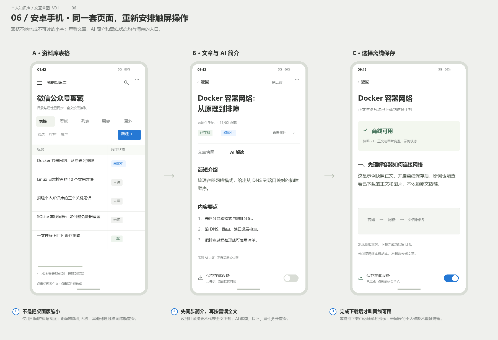
这一页的操作约定
- 通过侧栏进入与电脑相同的页面树，顶部切换视图。
- 标题列保留，横向滑动查看其他列；点击属性用触屏编辑面板修改。
- 手机返回会保留原来的筛选和位置。
- 离线下载只影响当前手机；不触发其他设备一起下载。
07 / 编辑属性与新增属性列
打开原图 ↗左边演示单元格原位编辑，右边演示新增“掌握程度”单选属性；两块是独立场景，不会同时弹出。
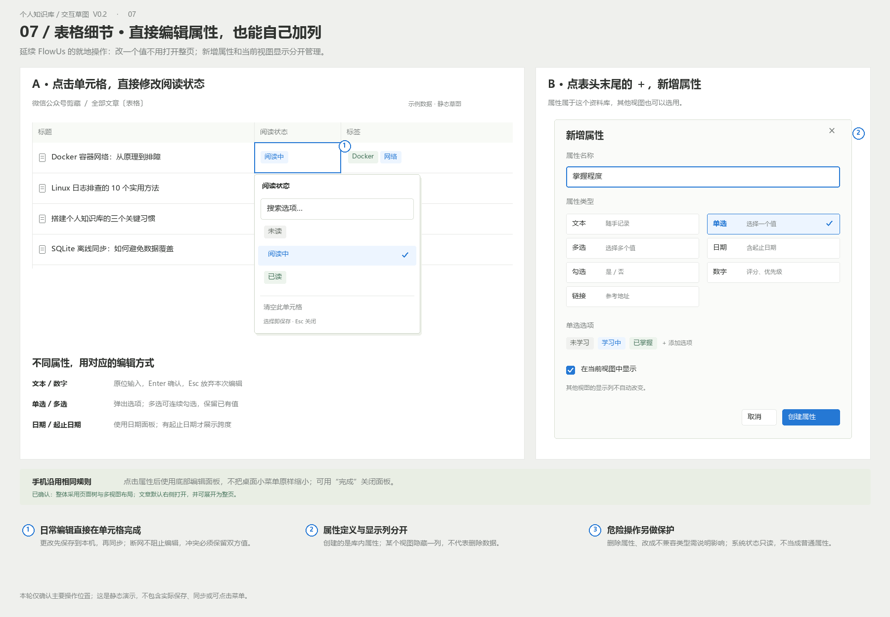
这一页的操作约定
- 点击标题打开右侧文章；点击普通属性直接编辑，不必打开记录整页。
- 文本和数字用 Enter 确认；单选选择即保存，多选可连续选择。手机改用底部面板。
- 新属性属于当前资料库；勾选“在当前视图中显示”，不改变其他视图现有的显示列。
- 修改先保存到本机，再同步。出现离线冲突不能覆盖另一台设备的修改。
08 / 新建视图与设置视图
打开原图 ↗创建“Linux 待读”表格，筛选未读的 Linux 资料；它仍然引用微信公众号剪藏库的数据。
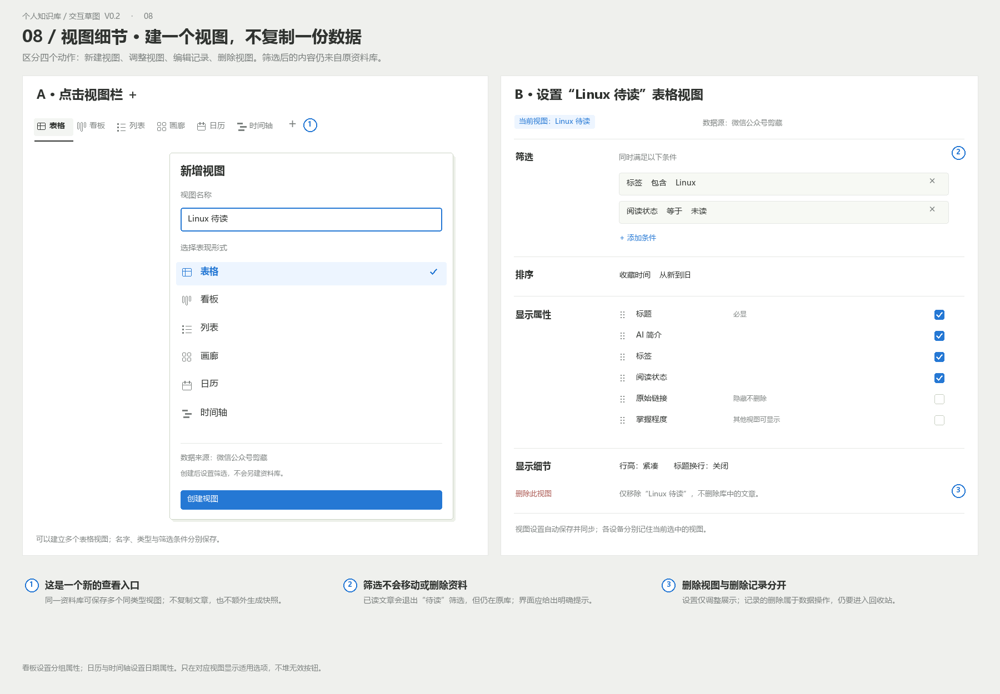
这一页的操作约定
- 同一资料库可以有多个表格或其他同类视图，分别命名和保存设置。
- 库内搜索临时查找；视图筛选是可保存的条件，两者不混淆。
- 视图设置同步，但各设备分别记忆当前打开哪个视图。
- 看板增加分组设置，日历和时间轴增加日期依据，仅显示适用的设置。
- 隐藏属性不删除值；删除记录进入回收站；删除视图只是移除查看入口。
09 / 任务失败：只处理出问题的阶段
打开原图 ↗统一查看云端处理任务，但不让单篇失败挡住其他内容的正常阅读。资料库记录也直接显示异常。
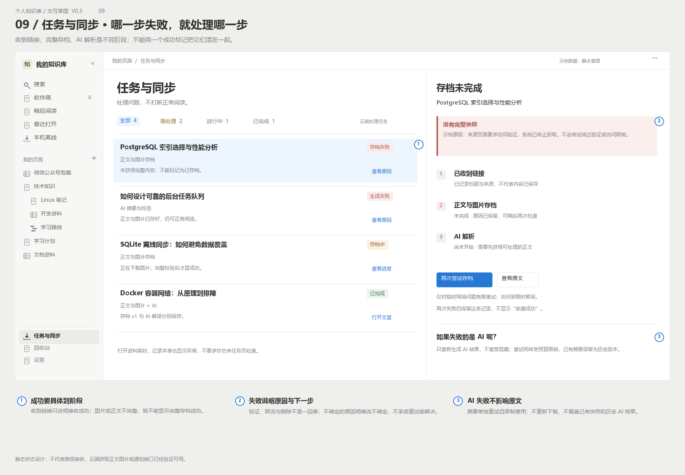
这一页的操作约定
- 接收消息、正文图片存档、AI解析分别记状态。收到链接不显示为完整收藏成功。
- 正文或图片不完整时显示“存档失败”或“存档不完整”，已有可读部分可保留，但不得标成完整离线快照。
- 失败原因需要区分网络临时故障、来源删除、访问验证、限流或原因不明；只有明确获知才做确定解释。
- 访问验证或其他限制不能靠后台绕过。再次尝试只在允许范围内执行，不能保证成功。
- AI失败仅重试AI阶段，按预算限制重试次数并记录费用；保留原快照和已有AI版本。
- 第一版不承诺微信内一定能异步通知成功，消息通知还需按账号权限验证。
10 / 下载未完成、旧版待更新与安全清理
打开原图 ↗开关表示你想保留离线副本，下载状态说明它是否真正可用；三个场景分别演示，不是要求同时显示三列界面。
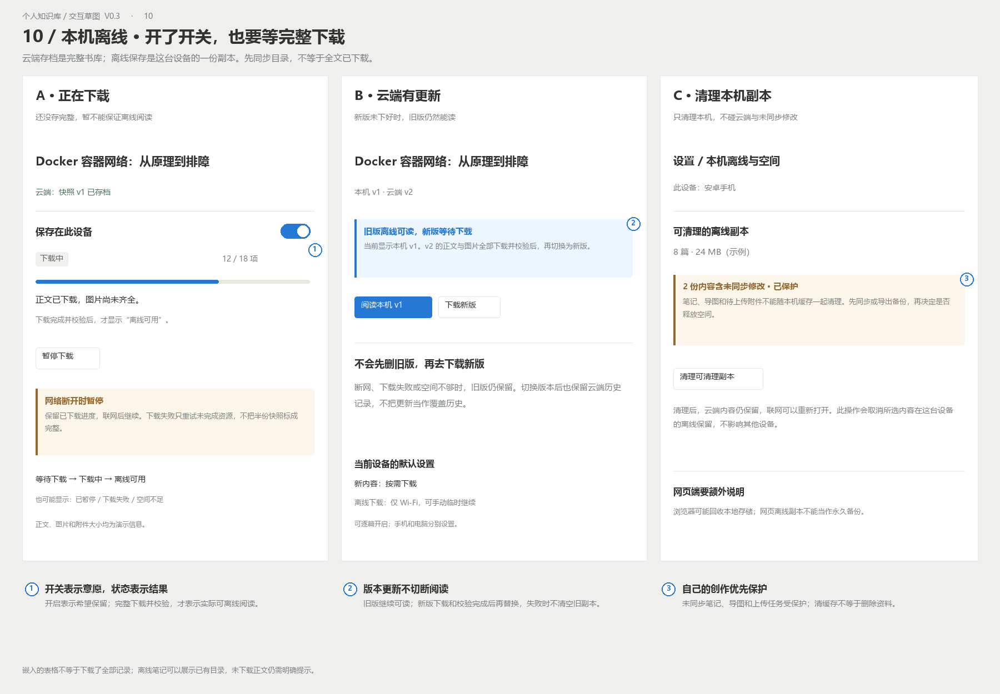
这一页的操作约定
- 显示等待、下载中、暂停、失败、空间不足及离线可用；失败后保留安全的下载进度，不重下全部文件。
- 当前设备默认按需下载，离线下载建议仅Wi-Fi，可主动临时使用移动网络。此为设计默认值，不限制设备独立设置。
- 云端新版未完全下载时，旧版离线副本继续可读，并显示版本差异；下载成功后再切换。
- 关闭离线开关、释放本机空间和删除云端资料是不同操作，所选清理范围应明确显示。
- 本机未同步笔记、导图、属性修改、待上传附件以及冲突草稿不能随缓存清理；本地保存失败时也必须醒目提示并保留可导出内容。
- 嵌入视图或页面引用不意味着关联记录已全文下载，打开未下载目标时要解释当前离线范围。
- 浏览器离线数据可能被回收，不能承诺与客户端本机持久保存完全相同的可靠性。
11 / 同一文档，两台设备都修改了
打开原图 ↗展示两个版本和可编辑的合并草稿；手动合并、分别保留、稍后处理都有明确出口。
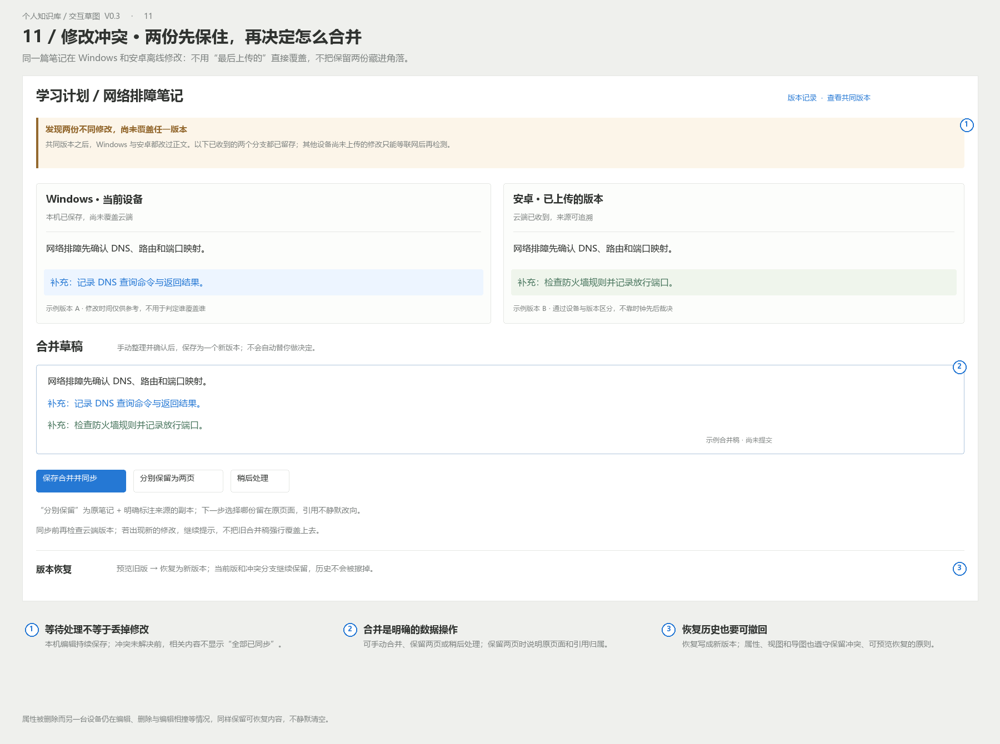
这一页的操作约定
- 同一基础版本分叉时保留双方，不按设备时钟或最后上传时间静默覆盖。
- 用户手动处理正文或复杂内容；可单独查看共同版本辅助比较，草稿也要保存到本机。
- 提交合并前再次检查云端版本，出现新的修改就提示重新处理，不强行覆盖。
- 选择“分别保留为两页”时，先说明哪份保留原页面身份、哪份生成副本；不悄悄重定向现有双链。
- 如果只采用其中一份，另一份仍保留可恢复的历史分支，不能只给一个丢弃按钮。
- 选择稍后处理不丢失修改，不把相关项目标记成全部已同步。
- 恢复旧版本形成新版本；恢复前保留尚未同步的修改。导图和属性用相应差异界面，不要求都变成纯文字。
- 属性删除与离线编辑相撞、内容删除与编辑相撞、视图规则冲突同样不能静默清空数据。
12 / 手动思维导图编辑
打开原图 ↗导图仍是一张普通可组织、引用和恢复的内容页面，画布保持清楚，不额外建一套复杂产品。
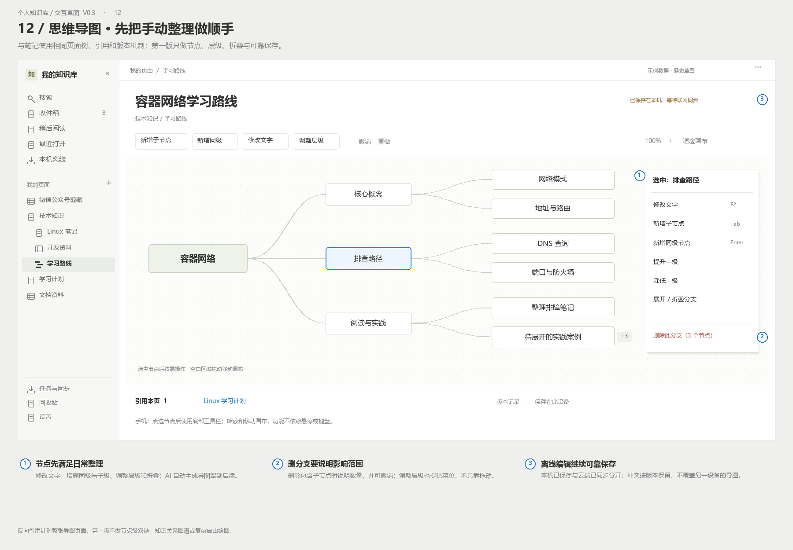
这一页的操作约定
- 支持新增子节点与同级节点，父子层级由数据保存，不只记录画面坐标。
- 通过菜单或快捷键调整层级；不能把节点移动到自己的子树中，根节点也不能随意提升层级。
- 删除分支明确说明包含的节点数量并可撤销。折叠不会删除子节点。
- 手机点选节点后使用底部工具栏；不依赖鼠标悬停或键盘才能编辑。
- 本机保存与云端同步单独显示；导图冲突保留双方，并以导图预览而非难懂的数据文本处理。
- 基础双链针对整张导图页面，第一版不新增节点级双链或自由绘图功能。
13 / 搜索与离线搜索范围
打开原图 ↗左侧是联网搜索示例，右侧解释断网后的范围和无结果状态；结果可来自原文、笔记或AI解读，明确标注出处。
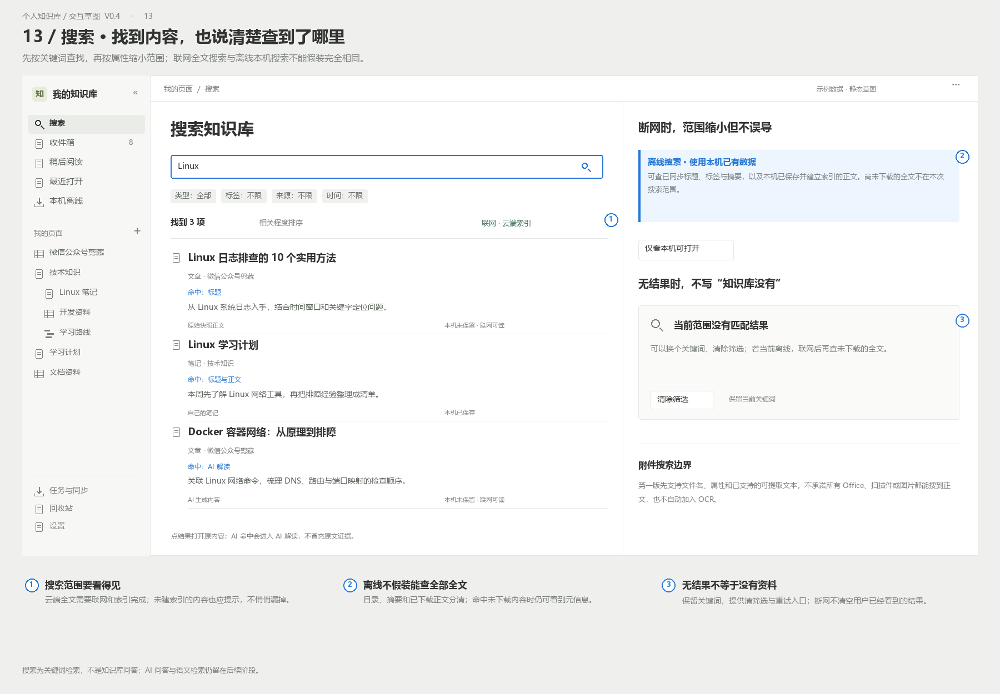
这一页的操作约定
- 按标题、属性、摘要与已支持正文建立索引；联网云端全文与离线本机范围分别显示。
- 原文命中、自己的笔记与AI内容命中分别标记，不把AI生成句子当成来源证据。
- 索引处理中、资源未下载、无结果、网络失败是不同状态；保留已输入关键词和筛选条件。
- 可按类型、标签、来源、时间和阅读状态筛选；结果打开后定位到可支持的命中区域。
- 附件文件名和元信息可搜索，正文覆盖取决于已支持的文本提取格式；第一版不自动增加OCR或保证所有Office正文可检索。
- 这不是知识库问答或语义搜索，不扩大已确认的高级AI范围。
14 / 自带AI渠道的配置与测试
打开原图 ↗填写渠道名称、协议、HTTPS地址、密钥和模型；先发内置短样本测试，不用真实私人文档来探路。
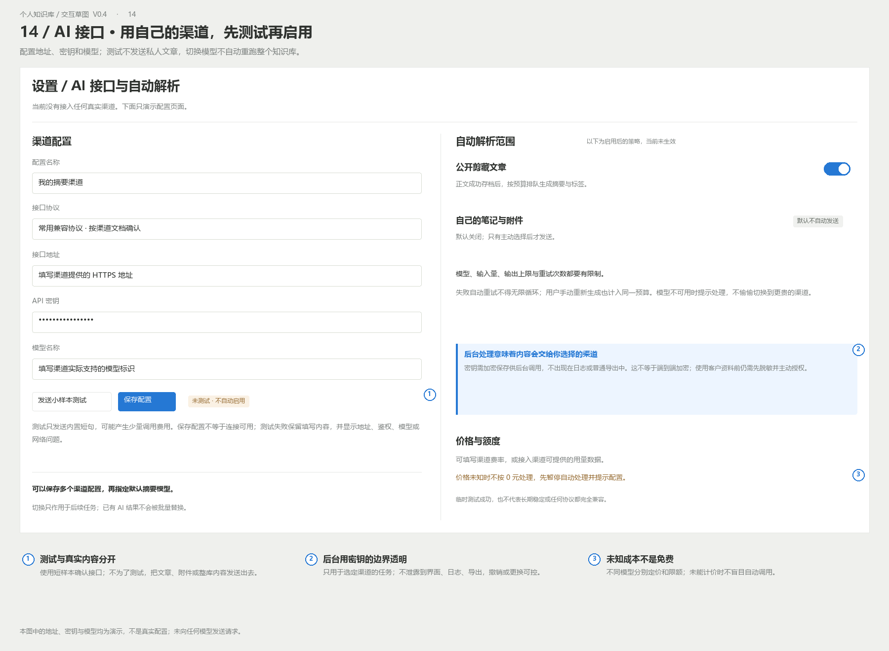
这一页的操作约定
- 支持保存多个配置并切换默认渠道和模型；不是自动选择最便宜或更换到未知模型。
- 连接测试只发送内置短样本，预先说明可能产生少量费用；未测试配置不自动启用，失败保留已填内容。
- 公开剪藏文章可在成功存档后自动分析；自己的笔记和附件默认不自动发送，需主动选择具体内容。
- 密钥由后台安全保存供异步任务使用，显示时遮挡，可替换或撤销，不进入普通日志或导出。后台可用密钥不等于端到端加密。
- 开启策略前说明内容会发到用户选定渠道；客户资料的脱敏和主动授权边界不变。
- 切换模型只影响后续任务；重跑需明确选择并受预算限制，已有结果保留历史版本。
- 费率未知时不按零元放行自动任务；测试可独立告知小额风险，重试次数、输入量和输出上限需有限制。
15 / 用量、估算与预算提醒
打开原图 ↗延续总运行费约30元/月、接近50元提醒的目标。AI预计2–5元/月；图中5元AI限额、4元AI提醒、45元总额提醒是可调整的设计建议，不是新增确认或真实扣费。
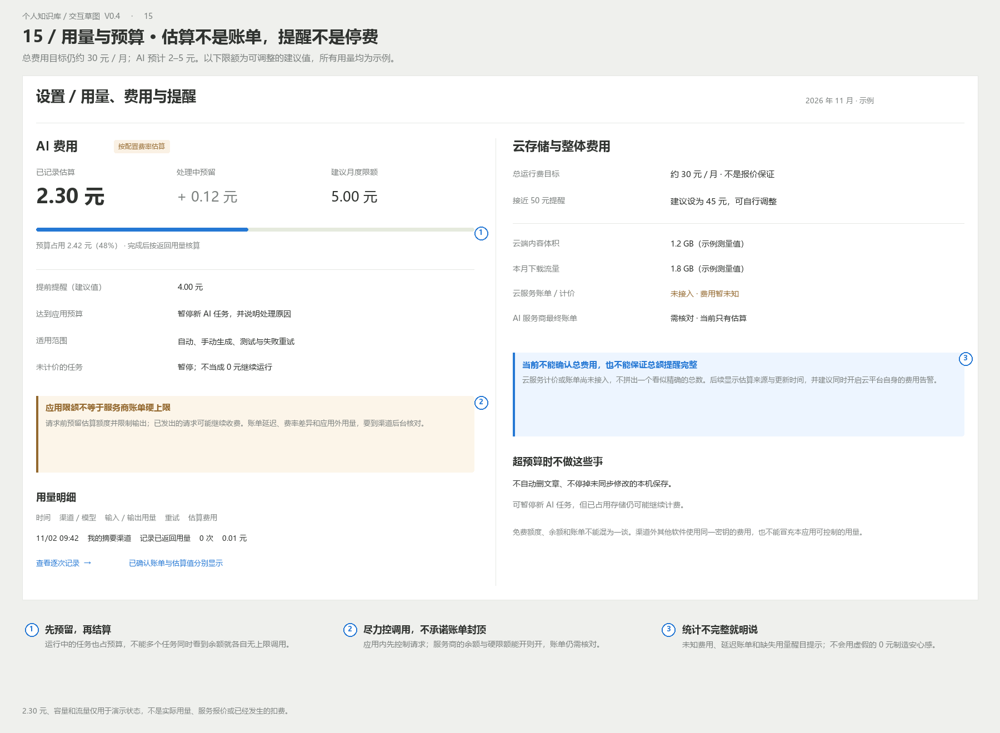
这一页的操作约定
- 区分实际返回用量、按费率估算、渠道账单和待核对项，展示估算来源与最近更新时间。
- 请求发出前预留预算，限制单次请求和并发；结束后根据已知用量结算，防止并发任务重复占用同一余额。
- 失败但可能计费、超时不确定是否执行的任务不能简单当成免费并无限重试；计入不确定项。
- 应用预算覆盖可记录的测试、自动分析、手动生成和失败重试；不声称能管理同一密钥在其他应用的花费。
- 达到阈值暂停新AI任务、保留队列并提醒。已发出的任务及存储费用不能保证停止。
- 未知云账单不按零元拼总数；统计不完整时明确提示总额提醒可能不完整，并建议开启云平台自身告警。
- 总成本包含AI、服务、存储、流量和请求等实际采用项目；容量不设产品固定门槛，不等于无限免费或无限保留历史。
- 预算超限不自动删除资料，不影响本机创作的可靠保存。
16 / 通用导出与完整备份
打开原图 ↗这里管理整库迁移与完整备份；日常单篇文章或笔记的HTML/PDF导出放在内容页“更多”菜单，见18号图。通用可读与恢复全部结构分别说明，不混为一个下载按钮。
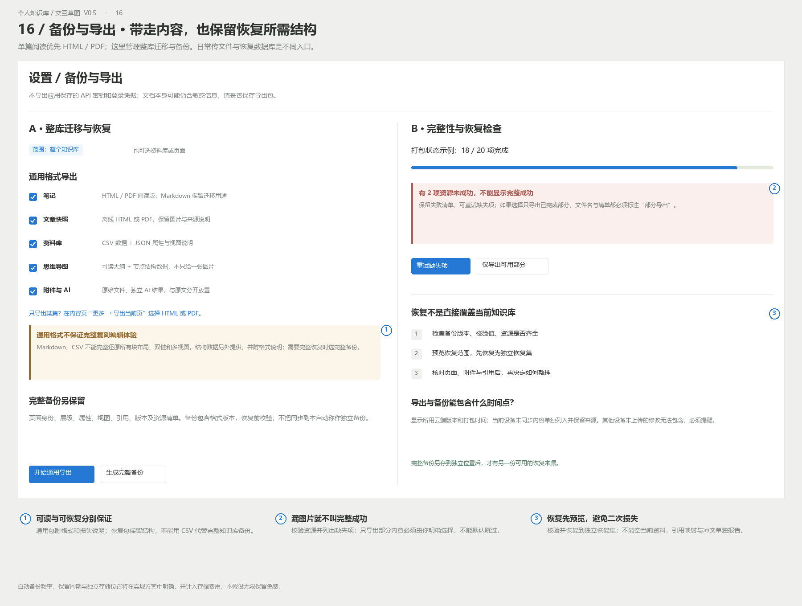
这一页的操作约定
- 单篇阅读与外发优先完整离线HTML和阅读PDF；Markdown、CSV、JSON仍保留整库迁移、数据交换和恢复用途，不再作为日常单篇导出的主要入口。
- 批量通用导出包含笔记阅读文件、Markdown和图片、文章HTML/PDF、原始附件、独立AI结果、资料库CSV和结构说明、导图可读大纲与节点数据。
- Markdown和CSV不能完整承载所有块、属性类型、视图、嵌入与双链；另附结构清单、格式版本和不能还原的部分说明。
- 整库导出尽量将库内引用改为稳定相对链接；范围外链接和无法导出的目标列明，不伪装完整本地跳转。
- 完整备份保留可恢复页面身份、父子关系、记录、属性、视图、引用、必要历史和资源；历史保留策略仍须结合费用选型明确。
- 资源完整性和校验失败时不能显示全量成功；仅导出可用部分需要明确选择，并在包名和清单上注明部分导出。
- 应用API密钥和登录凭据不导出，但原文或笔记自含的敏感信息仍可能存在，须提示导出包隐私风险。
- 显示打包时间、云端版本与本机未同步内容；别的设备未上传的内容无法提前包含。
- 恢复到独立恢复集，预览范围、检查引用和附件，原库不清空；不能假设重复导入会自动正确合并。
- 独立备份目的地、周期、保留和验证恢复需在实施方案明确并计费；同步和同桶镜像不自动等同独立备份。
17 / 首次使用与空白状态
打开原图 ↗你已熟悉FlowUs，不做长篇强制教程。先创建一页真实笔记，之后逐步设置AI与微信接收。
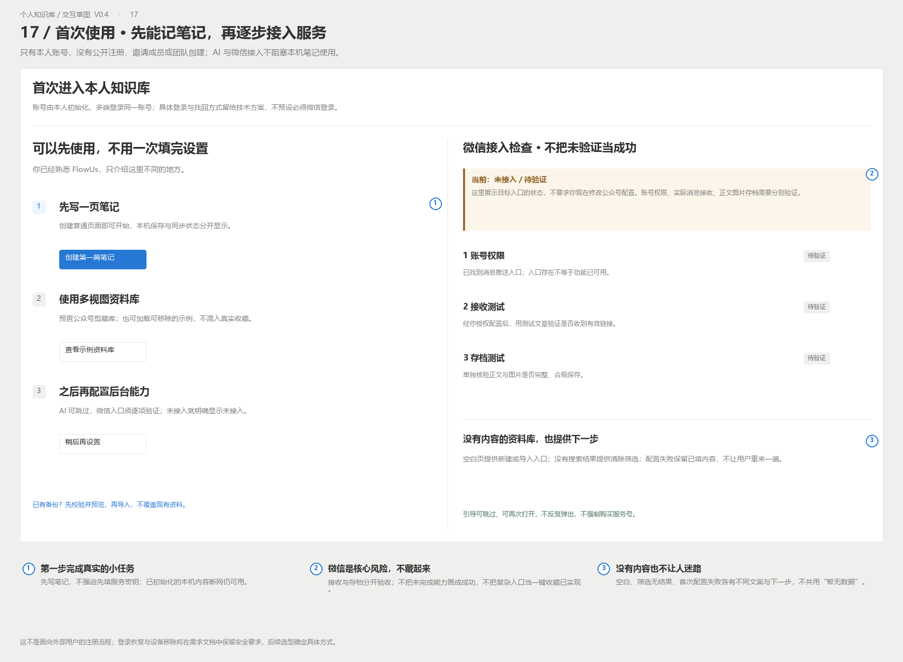
这一页的操作约定
- 本人初始化账号，不开放任意注册；认证方式需支持跨端、安全登录、会话失效和账号找回，技术方案确定可用方式。
- 已初始化设备断网仍可访问本机已有资料并保存新修改；登录或会话问题不应导致清空本地未同步内容。
- 引导可跳过、可再次打开，记住关闭选择，不反复强制出现。
- 示例资料明确标识且可移除，不混进真实收藏，不在首次打开时自动调用付费AI。
- 微信账号权限、消息接收和正文图片存档分别验收；目前仅确认找到了消息推送入口，不能标成实际接入成功。
- 接入配置需用户授权，现有公众号自动回复可能受影响，变更前提醒；不默认必须购买服务号或认证。
- 空白页面、新库无内容、筛选无结果和服务配置失败各给具体下一步；不共用一个“暂无数据”。
18 / 单篇文章与笔记：完整离线HTML和阅读PDF
打开原图 ↗按日常外发场景新增的第一版需求：内容页“更多 → 导出当前页”，选择HTML或PDF，预览后保存本地文件。接收者不需要账号或访问本知识库，不新增公开分享链接。
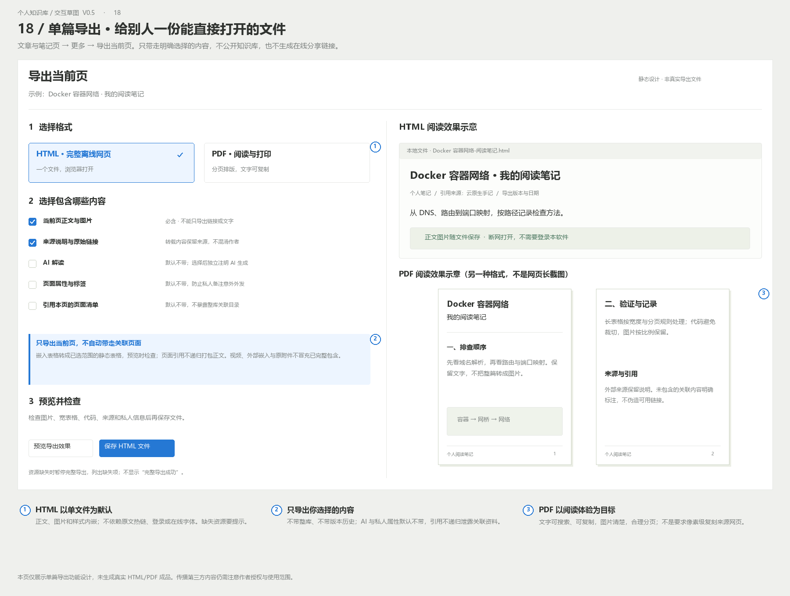
这一页的操作约定
- 导出对象是当前文章快照或笔记的明确版本，标题、图片、表格、代码和基本阅读排版一起保留；导出不重新调用AI，也不修改原内容。
- HTML默认生成一个自包含文件，正文、所需图片和阅读样式内嵌；无需登录、远程脚本、在线字体或原文热链即可阅读。主动点击原始链接仍需联网，不把外链误称离线内容。
- 导出的来源HTML须清理可执行脚本、跟踪和凭据；不自动加载外部资源。正常链接作为用户主动访问的外链保留，不承诺递归保存整个互联网。
- PDF采用阅读和打印排版，支持可选择和搜索的正文文本，中文字体正确、图片完整、合理分页与页码；代码和宽表格不能静默裁切，长图和跨页表格需要在预览中检查。
- 可阅读PDF是对已保存内容的导出，不等于第一版增加高保真网页PDF采集，更不是Office直接编辑或逐像素还原原始页面。
- 正文与必需图片默认包含；来源说明保留，AI结果、私人属性、标签和反向引用清单默认不带。用户选择AI后独立成节并标明生成内容，不能与原文或本人写作混淆。
- 不自动附带版本历史、关联笔记、双链目标正文、子页面或整库。页面引用超出导出范围时保留可读名称并标注未包含，移除只能在应用中访问的无用跳转。
- 笔记中的嵌入资料库只按明确范围转成静态表格或列表，预览显示导出行数及列，不悄悄带走整个源库或仅导出当前屏幕可见的几行。可分页加载的范围必须先完整展开或明确选择。
- 外部嵌入、视频、交互画布及原附件不默认承诺装进单一HTML/PDF；不支持内容列明并提示，用户可排除或单独下载，缺失必需图片时不得显示完整成功。
- 文档含未同步本机修改时导出明确的本机已保存版本，并注明保存时间；有未解决冲突时先选分支，不擅自把云端版本称作最新完整版本。
- 预览与导出基于相同确定版本，检查资源完整性和私人信息；对大图文件先显示大小风险，不能为减小文件静默压坏图片或漏图。文件过大应提示处理或其他打包方式，不设不透明的固定容量门槛。
- 导出不自动外发，不生成公开地址，不包含密钥；资料自身可能含敏感信息，预览不能替代脱敏检查。第三方文章保留作者与来源，不授予额外传播权。
- 验收至少覆盖安卓、Windows、网页的导出入口，以及把成品交给另一台未登录设备断网阅读：HTML图片与样式完整，PDF分页、中文、图片、表格和可复制文本可用。